6A · 짧은 두 경로와 연결문
각 세 자리인 두 경로를 가운데에서 연결해 진행 방향을 바꿀 수 있는 구조.
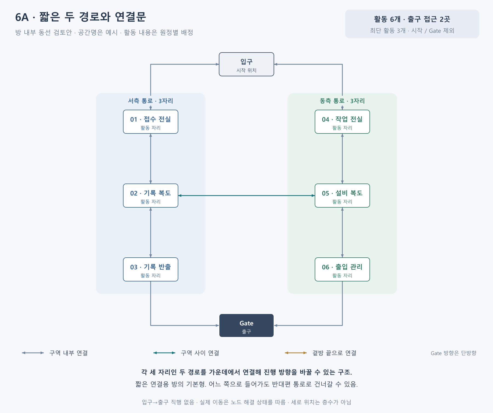
짧은 연결용 방의 기본형. 어느 쪽으로 들어가도 반대편 통로로 건너갈 수 있음.
활동 6개 · 출구 접근 2곳 · 최단 활동 3개
6B · 주경로와 안쪽 곁방
주경로 네 자리에 두 자리짜리 곁방을 덧붙이고, 출구는 한 곳으로 모음.
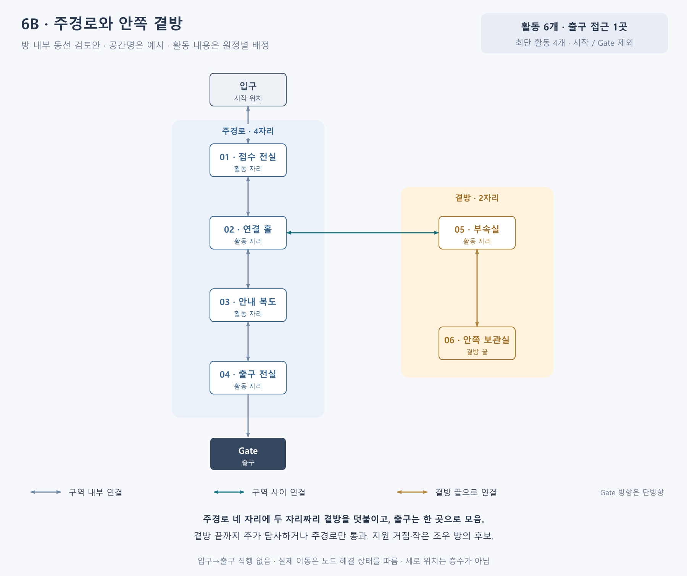
곁방 끝까지 추가 탐사하거나 주경로만 통과. 지원 거점·작은 조우 방의 후보.
활동 6개 · 출구 접근 1곳 · 최단 활동 4개
6C · 작은 순환 회랑
여섯 자리를 하나의 고리로 연결해, 출구 앞에서도 반대쪽 탐사를 이어갈 수 있음.
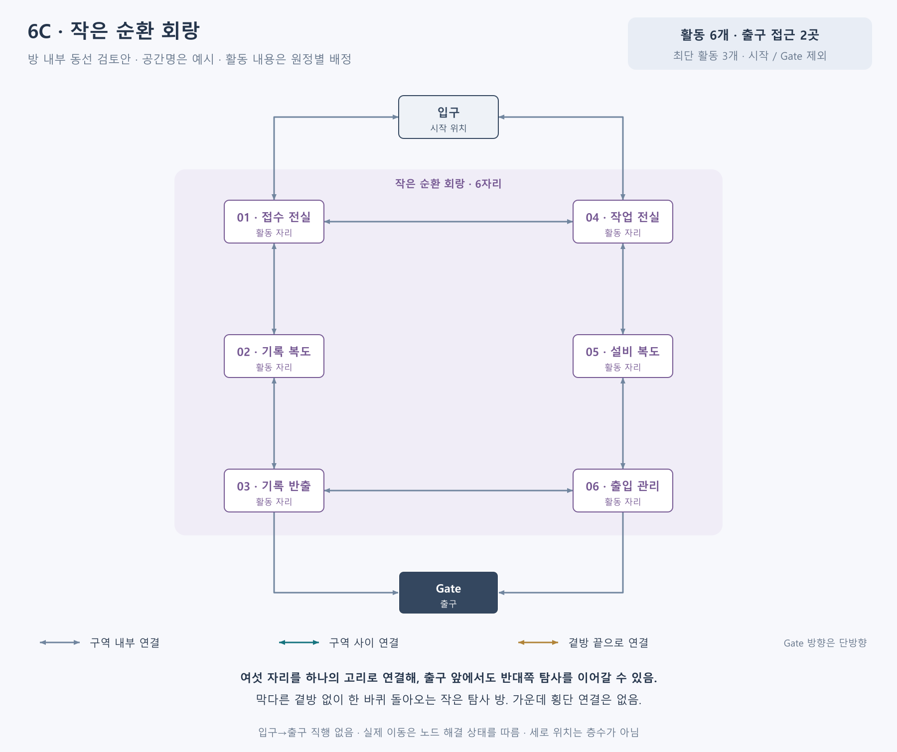
막다른 곁방 없이 한 바퀴 돌아오는 작은 탐사 방. 가운데 횡단 연결은 없음.
활동 6개 · 출구 접근 2곳 · 최단 활동 3개
9A · 두 복도와 작은 곁방
서측·동측 복도를 중앙에서 연결하고, 짧은 곁방 두 곳을 덧붙인 구조.
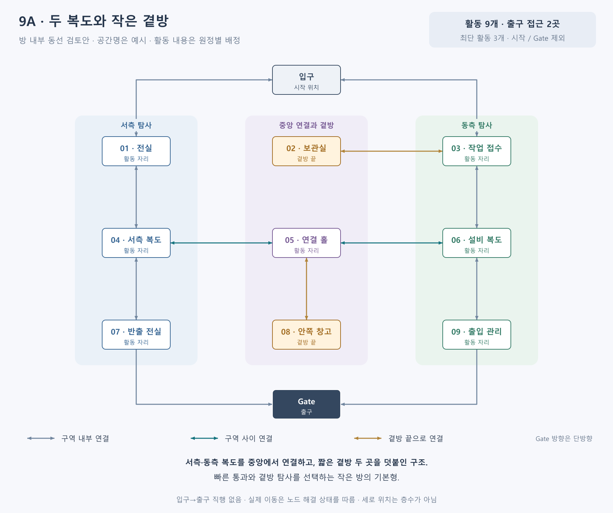
빠른 통과와 곁방 탐사를 선택하는 작은 방의 기본형.
활동 9개 · 출구 접근 2곳 · 최단 활동 3개
9B · 외곽 고리와 안쪽 방
외곽 여덟 자리가 하나의 고리로 이어지고 중앙 방 하나가 안쪽으로 분기.
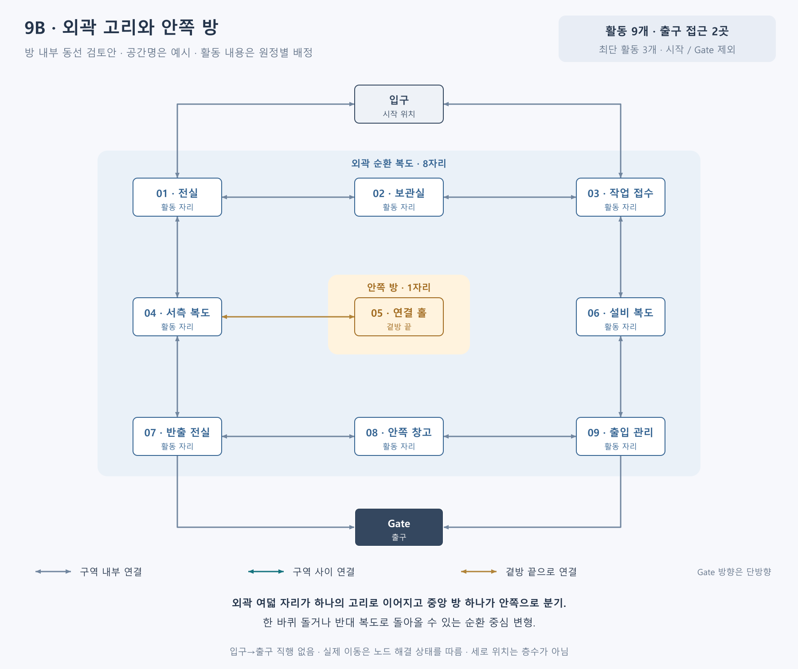
한 바퀴 돌거나 반대 복도로 돌아올 수 있는 순환 중심 변형.
활동 9개 · 출구 접근 2곳 · 최단 활동 3개
9C · 중앙 복귀와 단일 출구
중앙 통로에서 양쪽을 탐사하고, 아래의 출구 전실 한 곳으로 복귀.
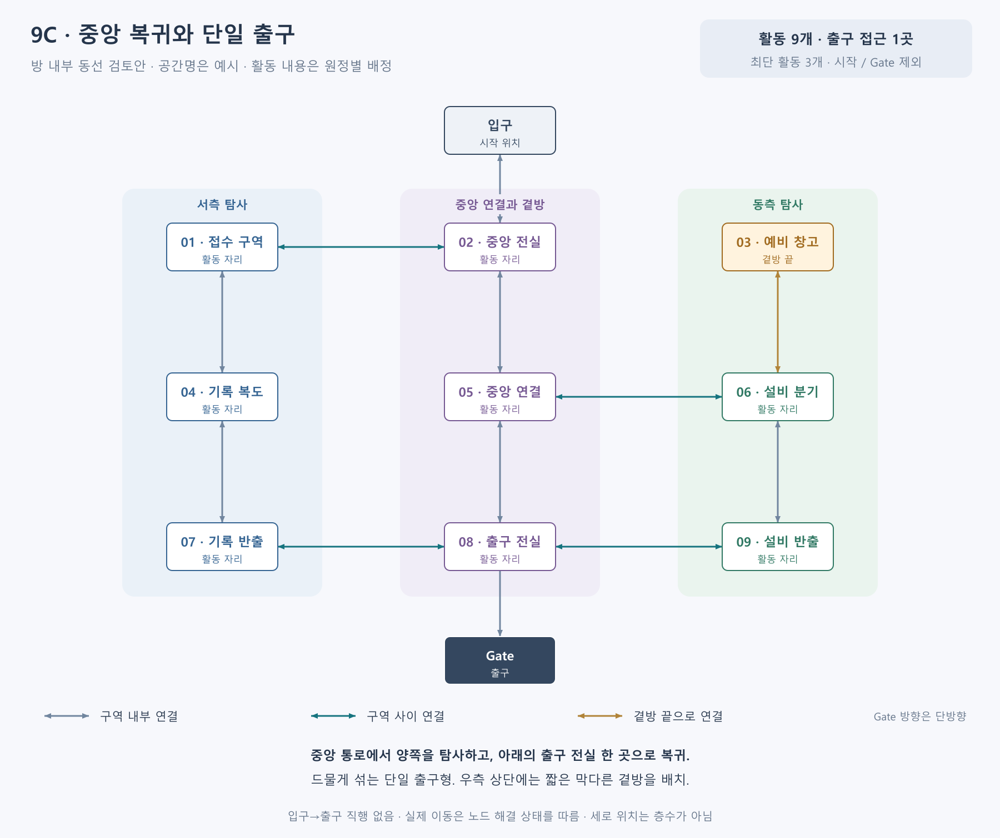
드물게 섞는 단일 출구형. 우측 상단에는 짧은 막다른 곁방을 배치.
활동 9개 · 출구 접근 1곳 · 최단 활동 3개
12A · 횡단 복도와 네 곁방
두 주 복도를 긴 연결 복도로 잇고, 위아래에 곁방을 나누어 배치.
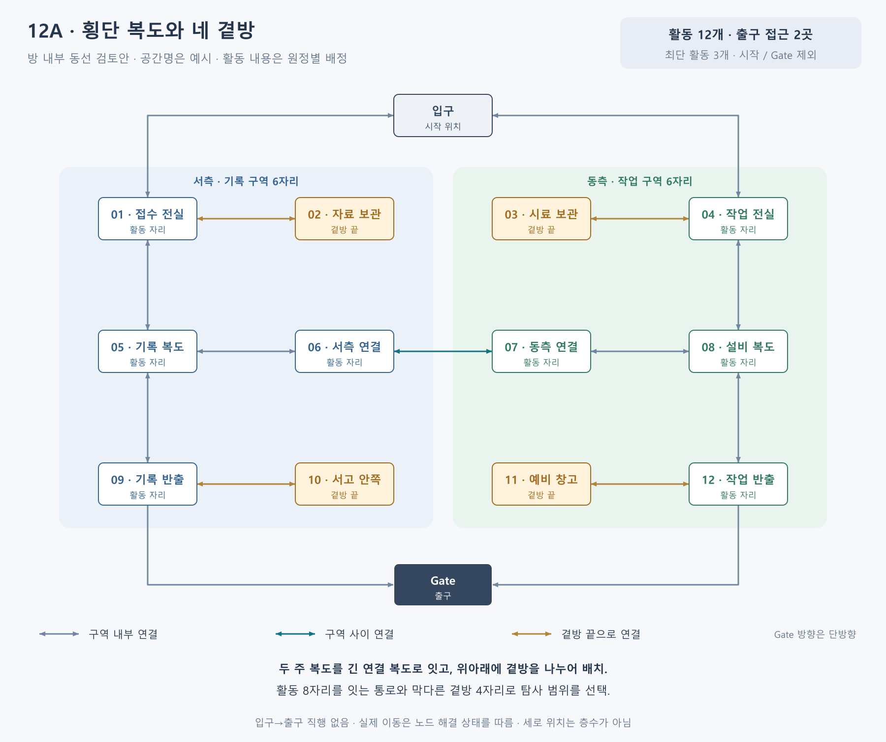
활동 8자리를 잇는 통로와 막다른 곁방 4자리로 탐사 범위를 선택.
활동 12개 · 출구 접근 2곳 · 최단 활동 3개
12B · 두 순환 구역과 연결문
각 여섯 자리 구역이 독립된 순환 복도를 가지며, 중간 연결문으로 왕래.
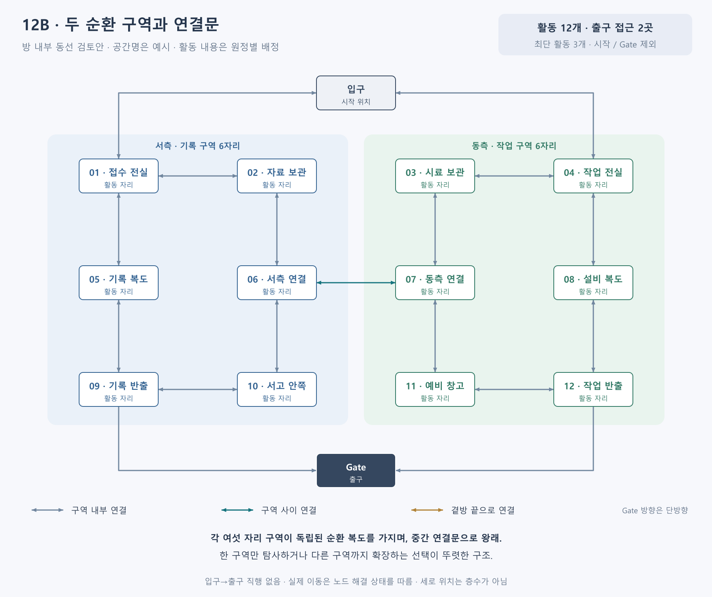
한 구역만 탐사하거나 다른 구역까지 확장하는 선택이 뚜렷한 구조.
활동 12개 · 출구 접근 2곳 · 최단 활동 3개
12C · 외곽 회랑과 내부 횡단로
외곽 고리를 따라 돌거나, 안쪽 두 자리를 통과해 반대편으로 이동.
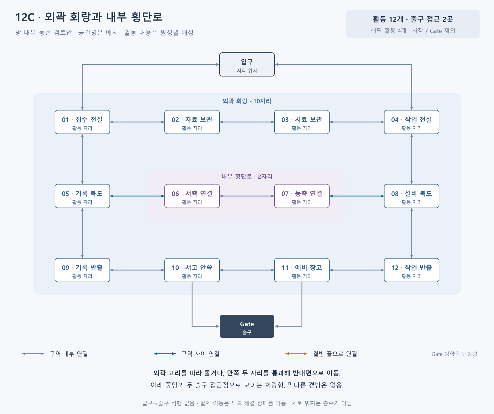
아래 중앙의 두 출구 접근점으로 모이는 회랑형. 막다른 곁방은 없음.
활동 12개 · 출구 접근 2곳 · 최단 활동 4개
15A · 중앙 홀과 두 순환 구역
중앙 세 자리에서 기록·작업 구역으로 나뉘고, 아래 연결점으로 복귀.
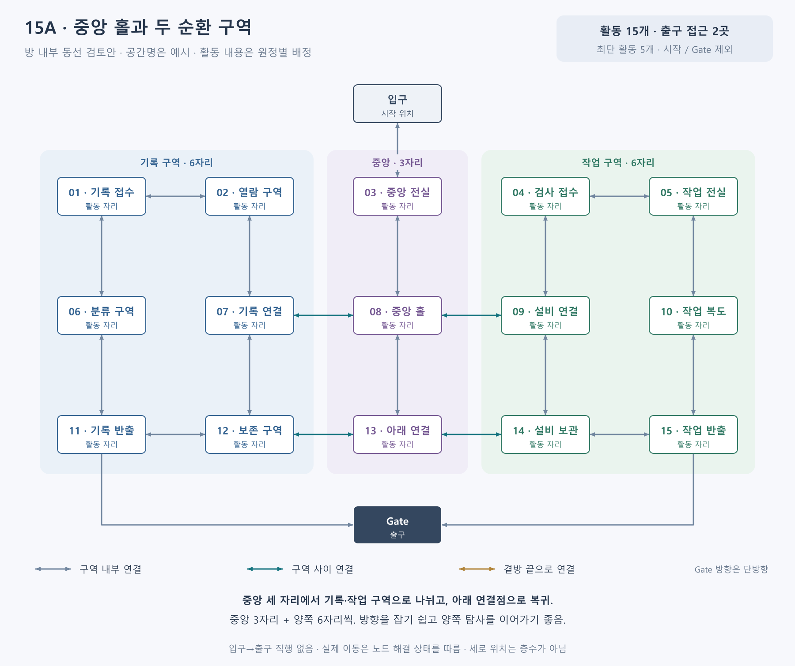
중앙 3자리 + 양쪽 6자리씩. 방향을 잡기 쉽고 양쪽 탐사를 이어가기 좋음.
활동 15개 · 출구 접근 2곳 · 최단 활동 5개
15B · 외곽 고리와 깊은 곁방
외곽 열두 자리는 순환하고, 안쪽 세 자리는 끝까지 들어갔다가 복귀.
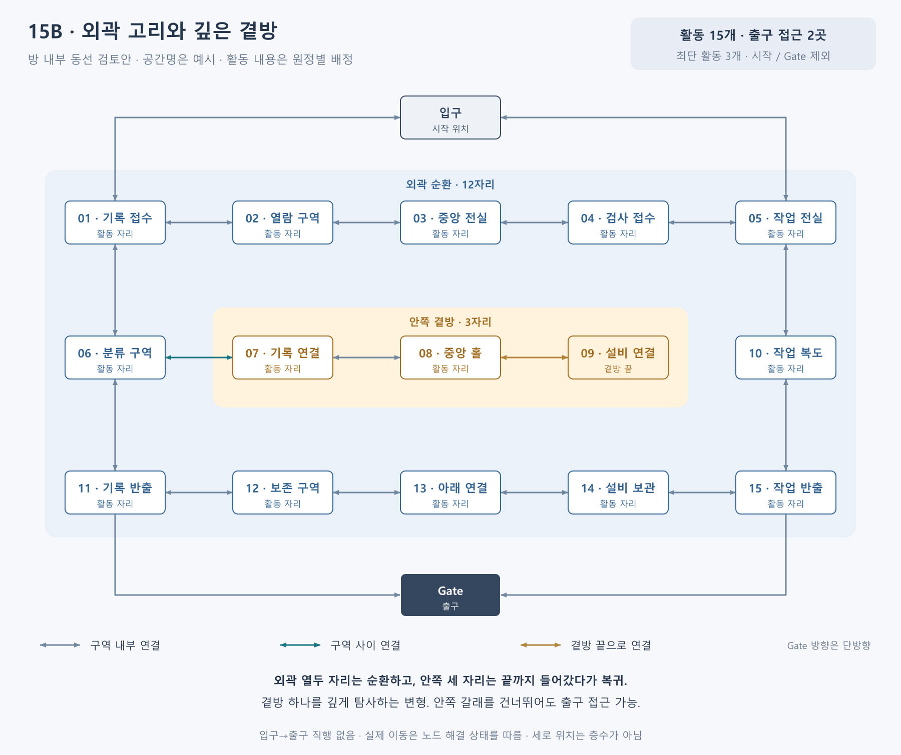
곁방 하나를 깊게 탐사하는 변형. 안쪽 갈래를 건너뛰어도 출구 접근 가능.
활동 15개 · 출구 접근 2곳 · 최단 활동 3개
15C · 엇갈린 세 구역
접수·처리·반출 구역을 각각 다섯 자리로 나누고 연결 위치를 엇갈리게 배치.
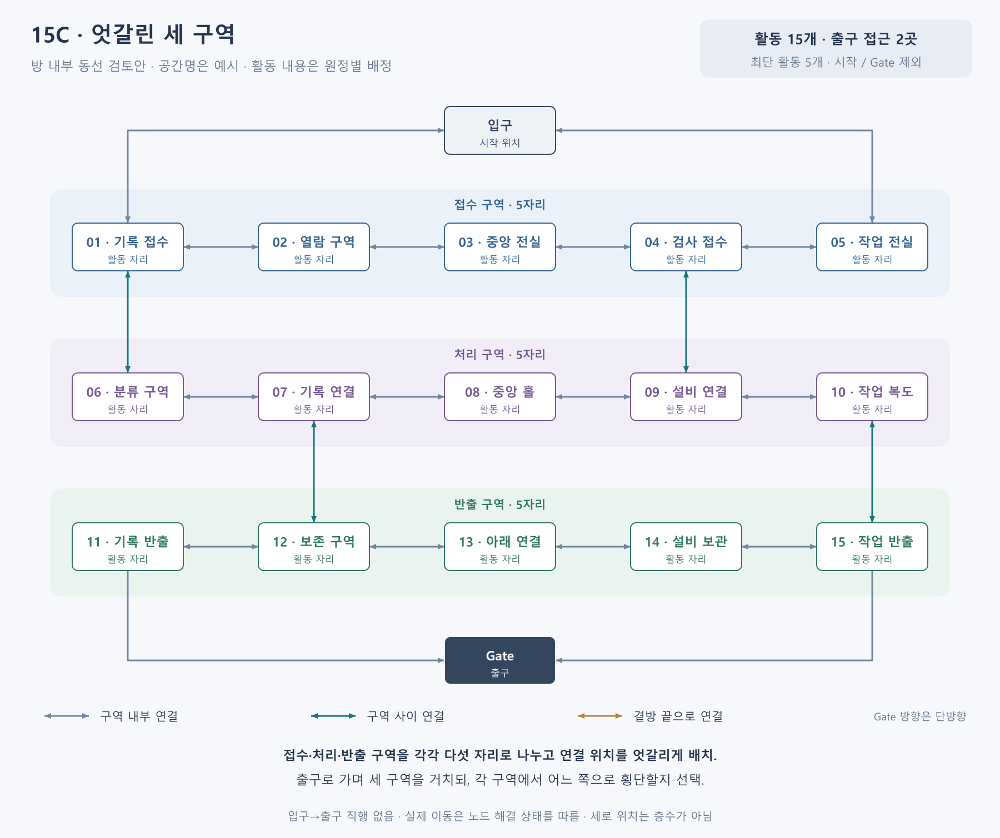
출구로 가며 세 구역을 거치되, 각 구역에서 어느 쪽으로 횡단할지 선택.
활동 15개 · 출구 접근 2곳 · 최단 활동 5개
18A · 세 구역을 차례로 횡단
기록 → 관제 → 작업 구역으로 진행하며 각 구역의 순환로와 연결문을 선택.
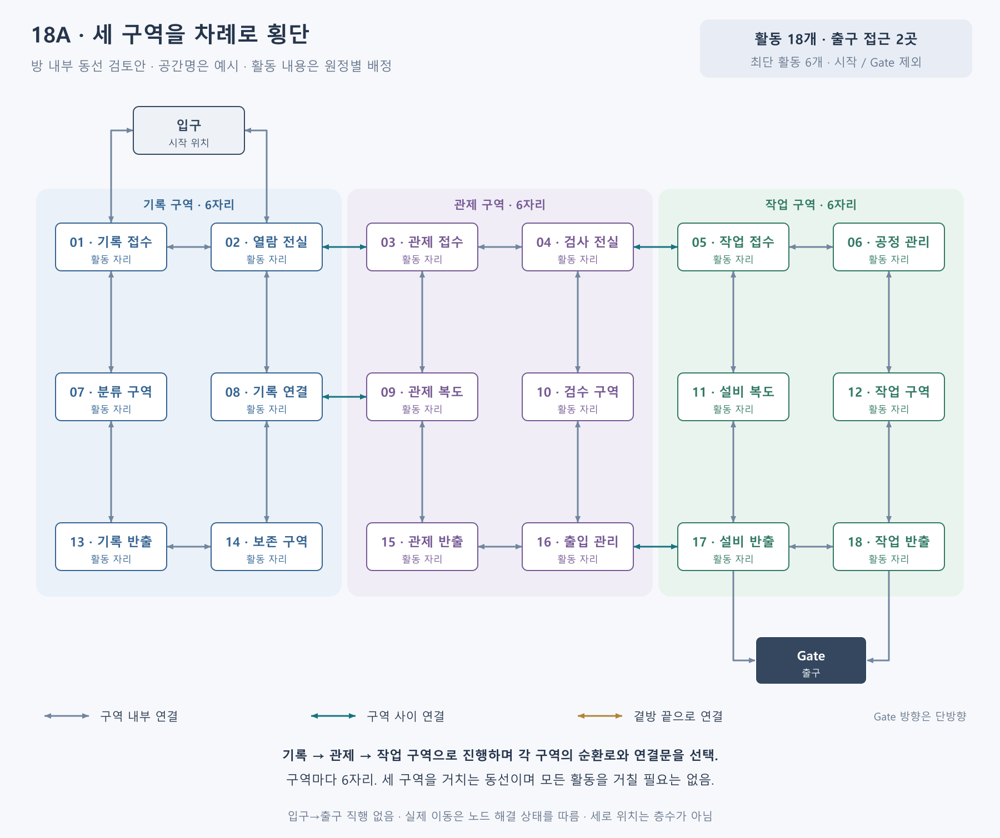
구역마다 6자리. 세 구역을 거치는 동선이며 모든 활동을 거칠 필요는 없음.
활동 18개 · 출구 접근 2곳 · 최단 활동 6개
18B · 중앙 통로와 양쪽 탐사동
중앙 여섯 자리에서 출구 방향을 잡고, 양쪽 탐사동을 선택적으로 순환.
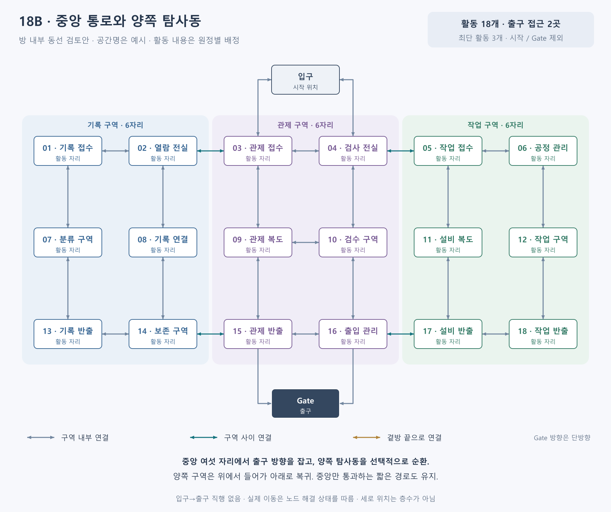
양쪽 구역은 위에서 들어가 아래로 복귀. 중앙만 통과하는 짧은 경로도 유지.
활동 18개 · 출구 접근 2곳 · 최단 활동 3개
18C · 큰 관제실과 좁은 설비동
기록 6자리 · 관제 8자리 · 설비 4자리로 구역 크기와 모양을 다르게 구성.
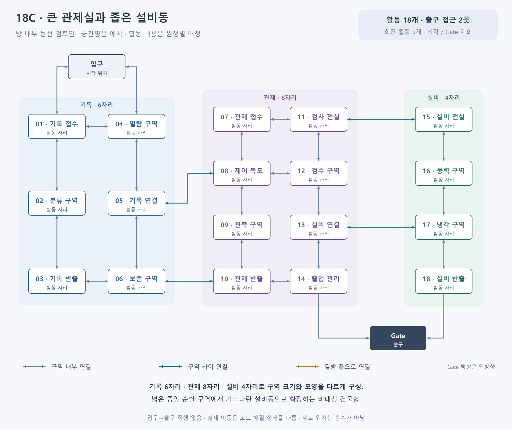
넓은 중앙 순환 구역에서 가느다란 설비동으로 확장하는 비대칭 건물형.
활동 18개 · 출구 접근 2곳 · 최단 활동 5개